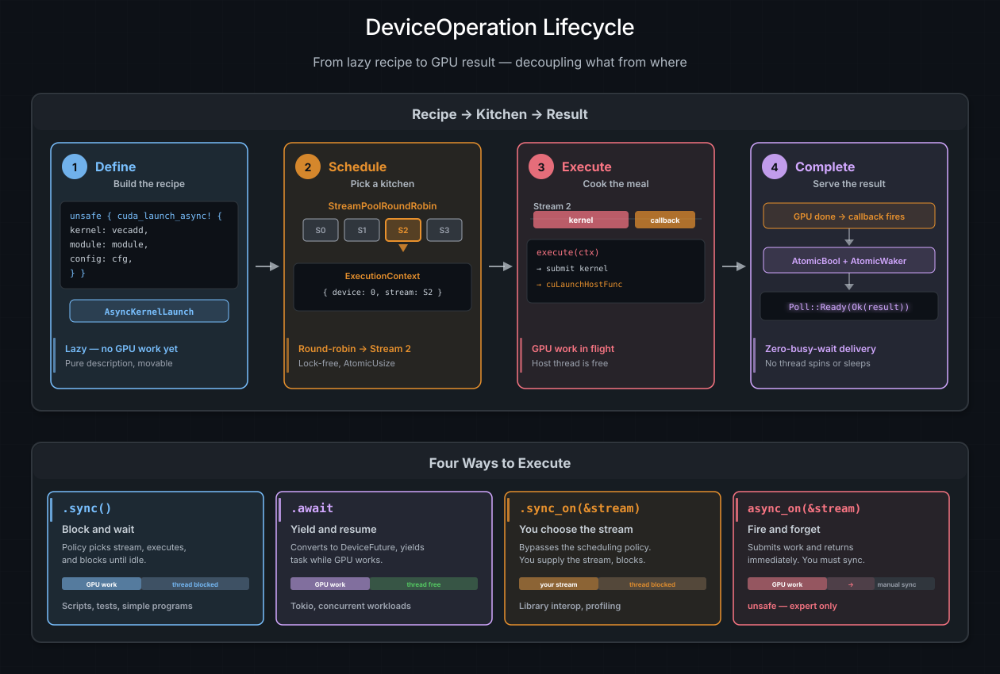

The DeviceOperation Model#
In the Writing GPU Programs chapter, you
saw that typed sync launches enqueue work on an explicit stream, while typed
async launches return a lazy handle that defers stream selection. This chapter
digs into the abstraction behind that lazy handle -- the DeviceOperation
trait -- and explains why decoupling what the GPU
should do from which stream it runs on is the foundation of composable async
GPU programming in cuda-oxide.
請參閱
CUDA Programming Guide -- Asynchronous Concurrent Execution
for the underlying CUDA stream and event model that DeviceOperation builds on.
Why lazy operations?#
In CUDA C++, you build concurrency by creating multiple cudaStream_t handles
and placing kernel launches and memory copies onto them explicitly. The
programmer decides at every call site which stream to use. This couples the
definition of GPU work to the scheduling decision, making it hard to
compose and rearrange work after the fact.
cuda-oxide takes a different approach. A DeviceOperation describes GPU work
without binding to any stream. You can compose operations with combinators
(and_then, zip!), pass them across function boundaries, store them in
collections, and only decide how to schedule them at the last moment. This is
the same idea behind Rust's Iterator -- build the pipeline lazily, execute it
eagerly at the call site.
Approach |
Stream chosen by |
Composable? |
|---|---|---|
Typed sync launch |
Caller |
No, enqueued immediately |
Typed async launch |
Scheduling policy |
Yes, returns |
{kind=link}

The DeviceOperation lifecycle. Phase 1: a typed async method builds a lazy recipe
(no GPU work). Phase 2: the scheduling policy picks a stream from its
pool. Phase 3: execute() submits GPU work and a cuLaunchHostFunc callback.
Phase 4: the callback fires, wakes the async runtime, and delivers the result.
Bottom: the four execution methods from simplest (.sync()) to most manual
(async_on).#
Recipes and kitchens#
Think of a DeviceOperation as a recipe card. The card describes every step
of the dish -- what ingredients to combine, at what temperature, for how long --
but it does not say which kitchen will cook it. You can hand the card to any
kitchen, photocopy it, staple two cards together into a multi-course meal, or
file it away for later. The dish only starts cooking when someone walks into a
kitchen and begins following the instructions.
In cuda-oxide's model:
A recipe is a
DeviceOperation-- a lazy description of GPU work.A kitchen is a CUDA stream -- the in-order queue where work actually runs.
The head chef is a
SchedulingPolicy-- the logic that decides which kitchen handles each recipe.The meal is the
Output-- the result you get when everything is done.
This separation is what makes the system composable. You can write a function that returns a recipe for "upload data, run GEMM, apply ReLU" without caring which stream will execute it. The caller can chain more steps onto the recipe, run it on a specific stream, or hand it to the scheduling policy and walk away.
Your first async launch#
The simplest way to create a DeviceOperation is a generated {kernel}_async
method. It looks like the sync method, but without the stream argument, and it
returns a recipe instead of cooking immediately:
use cuda_async::device_context::init_device_contexts;
use cuda_core::LaunchConfig;
// One-time setup: create a stream pool for scheduling
init_device_contexts(0, 1)?;
// Build the recipe (no GPU work yet)
let module = kernels::load_async(0)?;
// SAFETY: this is 1D, buffers contain 1024 elements, and module/scheduler
// both use device 0's context.
let op = unsafe {
module.vecadd_async(
LaunchConfig::for_num_elems(1024),
&a_dev,
&b_dev,
&mut c_dev,
)
}?;
// Now cook it: pick a stream, launch, wait for the result
op.sync()?;
At the point where op is created, nothing has happened on the GPU. The method
builds an AsyncKernelLaunch value that remembers which function to call, what
arguments to pass, and how to configure the grid -- but it does not touch any
stream. It is a recipe card sitting on the counter.
The unsafe is about accepting an unproved raw LaunchConfig, not about
building lazily. A contracted kernel uses a checked PreparedLaunch<K> and a
safe generated async method:
raw config -> unsafe async recipe
prepared K -> safe async recipe for K
When you call .sync(), the scheduling policy picks a stream from its pool,
submits the kernel, and blocks until the stream is idle. That single line is
where the recipe becomes a cooked meal.
What makes a DeviceOperation#
Behind the scenes, DeviceOperation is a trait. Any type that describes GPU
work can implement it. The trait has one required method and one associated type:
pub trait DeviceOperation: Send + Sized + IntoFuture {
type Output: Send;
unsafe fn execute(
self,
context: &ExecutionContext,
) -> Result<Self::Output, DeviceError>;
}
Output is the Rust value the operation produces when it finishes. For a
kernel launch this is () -- the kernel runs for its side effects on device
memory. For a device-to-host copy it might be Vec<f32>. For a memory
allocation it could be a DeviceBox<[f32]> that owns the pointer.
execute is where the actual GPU work happens. It receives an
ExecutionContext -- the assigned kitchen -- and submits work to the stream
inside it. The method is unsafe because GPU work may still be in flight when
it returns; the caller is responsible for synchronizing before reading results.
The Send bound means operations can move across threads (essential for
tokio::spawn). The IntoFuture bound is what makes .await work -- more
on that shortly.
You rarely implement DeviceOperation yourself. The crate provides a set of
types that implement it, and you compose them using combinators:
AsyncKernelLaunch-- produced by typed async launch methods. Launches a kernel.Value<T>-- wraps a host-side value. No GPU work. ReturnsTimmediately.AndThen-- chains two operations: run A, feed the result to B.Zip-- runs two operations and returns both results as a tuple.StreamOperation-- defers construction until the stream is known.
These are the building blocks of every async pipeline. The Combinators and Composition chapter covers each one in detail.
The ExecutionContext -- where the stream lives#
When a recipe is executed, it needs to know which kitchen it is in. The
ExecutionContext carries that information:
pub struct ExecutionContext {
device: usize, // which GPU
cuda_stream: Arc<CudaStream>, // which stream
cuda_context: Arc<CudaContext>, // which CUDA context
}
Operations never create streams themselves. The scheduling policy (covered in
Scheduling and Streams) creates the
ExecutionContext and passes it into execute. This is the core of the
separation: operations describe what, the context provides where.
Inside an execute implementation, you access the stream with
ctx.get_cuda_stream() and the CUDA context with ctx.get_cuda_context().
For most operations this is all you need -- enqueue a kernel or a memory copy
on the stream, and you are done.
Running the recipe: four ways to execute#
Once you have a DeviceOperation, you need to trigger it. cuda-oxide gives
you four paths, ranging from "do everything for me" to "I'll handle it myself."
.sync() -- block and wait#
The simplest option. The scheduling policy picks a stream, runs the operation, and blocks the calling thread until the stream is idle:
let result: Vec<f32> = d2h_operation.sync()?;
This is perfect for scripts, tests, and any place where you just want the answer now. No Tokio runtime needed.
.await -- yield and resume#
Inside an async runtime, .await does the same thing but without blocking the
thread. It converts the operation into a DeviceFuture, submits the GPU work,
and yields the current task. When the GPU finishes, it wakes the task and
delivers the result:
#[tokio::main]
async fn main() -> Result<(), Box<dyn std::error::Error>> {
init_device_contexts(0, 1)?;
let module = kernels::load_async(0)?;
// SAFETY: this is 1D, buffers contain 1024 elements, and module/scheduler
// both use device 0's context.
unsafe {
module.vecadd_async(
LaunchConfig::for_num_elems(1024),
&a_dev,
&b_dev,
&mut c_dev,
)
}?
.await?;
Ok(())
}
While the GPU is working, the Tokio runtime is free to poll other tasks -- no thread sits idle waiting for hardware. This is the key to running multiple GPU pipelines concurrently, which we explore in Concurrent Execution.
.sync_on(&stream) -- you choose the stream#
When you need a specific stream -- for interop with an existing CUDA library,
or to guarantee ordering with other work on that stream -- sync_on lets you
supply it directly and blocks until it completes:
let stream = ctx.new_stream()?;
operation.sync_on(&stream)?;
unsafe async_on(&stream) -- fire and forget#
The most manual option. It submits work to a stream and returns immediately, without synchronizing. The caller must ensure the stream is synchronized before reading results. This is useful for batching many operations onto a stream before a single sync at the end:
let stream = ctx.new_stream()?;
unsafe { op_a.async_on(&stream)? };
unsafe { op_b.async_on(&stream)? };
stream.synchronize()?; // now both are done
Lifting host data with value()#
Not every step in a pipeline involves the GPU. Sometimes you need to feed a
host-side value -- a configuration parameter, a set of dimensions, a pre-loaded
weight vector -- into a chain of device operations. The value() function
wraps any Send type in a no-op DeviceOperation that returns it immediately:
use cuda_async::device_operation::value;
let weights = vec![1.0f32; 1024];
let op = value(weights); // impl DeviceOperation<Output = Vec<f32>>
On its own, value() looks pointless. Its power shows up in composition. If
you are zipping together a host-to-device transfer and a configuration struct,
value() makes the configuration fit the pipeline:
let (device_buf, config) = zip!(
h2d(raw_data),
value(ModelConfig { dim: 64, layers: 3 })
).sync()?;
Both arms of zip! must be DeviceOperations. value() is the adapter that
makes host data play nicely with device work.
Talking to the stream with with_context#
Some operations need access to the stream itself at execution time. Memory
allocation (malloc_async), asynchronous copies (memcpy_htod_async), and
event recording all require a raw CUstream handle. But remember -- a
DeviceOperation does not know which stream it will run on when it is created.
The stream is assigned later, by the scheduling policy.
with_context bridges this gap. It creates an operation whose body is deferred
until the ExecutionContext is available:
use cuda_async::device_operation::{with_context, value};
use cuda_core::memory::{malloc_async, memcpy_htod_async};
fn h2d(host_data: Vec<f32>) -> impl DeviceOperation<Output = DeviceBox<[f32]>> {
with_context(move |ctx| {
let stream = ctx.get_cuda_stream();
let n = host_data.len();
let num_bytes = n * std::mem::size_of::<f32>();
unsafe {
let dptr = malloc_async(stream.cu_stream(), num_bytes).unwrap();
memcpy_htod_async(dptr, host_data.as_ptr(), num_bytes, stream.cu_stream())
.unwrap();
value(DeviceBox::from_raw_parts(dptr, n, ctx.get_device_id()))
}
})
}
The closure receives the ExecutionContext and must return another
DeviceOperation. Here it returns a Value wrapping the freshly allocated
device pointer. The inner operation is executed immediately on the same stream.
This pattern -- with_context wrapping raw driver calls, returning value()
at the end -- is how you turn any low-level CUDA operation into a composable
building block. The async_mlp example uses it for h2d, d2h, and zeros
helpers that slot cleanly into and_then chains.
小訣竅
with_context is the escape hatch for raw driver calls that need a
CUstream. For kernel launches, prefer contracted generated async methods:
they handle argument marshalling and buffer lifetimes, and accept a checked
PreparedLaunch<K>. Uncontracted generated methods still require an unsafe
raw-launch proof.
How the GPU tells Rust it is done#
When you .await a DeviceOperation, something interesting happens under the
hood. The operation becomes a DeviceFuture -- a type that implements Rust's
std::future::Future -- and the async runtime polls it. But how does a poll-
based system know when hardware has finished its work?
The answer is cuLaunchHostFunc, a CUDA driver API that enqueues a host-side
callback into a stream. When all preceding GPU work on that stream finishes,
the driver calls the callback on a driver thread. cuda-oxide uses this to build
a zero-busy-wait bridge between CUDA and Rust's async model.
The DeviceFuture is a three-state machine:
Idle ───poll()───► Executing ───callback fires───► Complete
│ │
(submit GPU work (return result
+ enqueue callback) to the runtime)
On the first poll, the future:
Calls
execute()on the operation, submitting GPU work to the stream.Enqueues a
cuLaunchHostFunccallback on the same stream, right after the GPU work. CUDA guarantees stream ordering: this callback will not fire until the kernel finishes.Returns
Poll::Pending. The async runtime parks the task and moves on.
When the GPU finishes the kernel, the CUDA driver calls the host callback
on a driver thread. The callback sets an AtomicBool flag and wakes the
task's AtomicWaker. The async runtime notices the wake and re-polls the
future.
On the second poll, the future sees the flag and returns
Poll::Ready(Ok(result)). The task resumes with the value.
The critical property: no host thread spins or sleeps while the GPU works.
The async executor is free to run other tasks -- including other DeviceFutures
on other streams. This is how cuda-oxide achieves true concurrent execution
without dedicating a thread per GPU operation.
請參閱
The Combinators and Composition chapter shows
how to build multi-stage pipelines from these primitives, and
Scheduling and Streams explains how the scheduling
policy selects a stream and creates the ExecutionContext that ties everything
together.